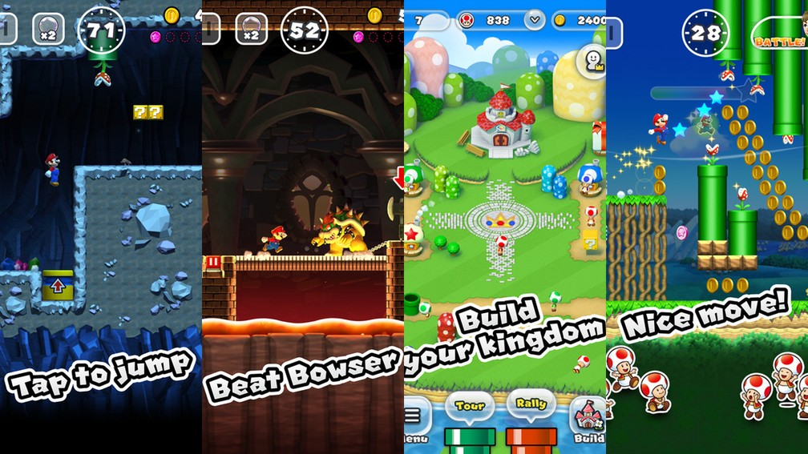
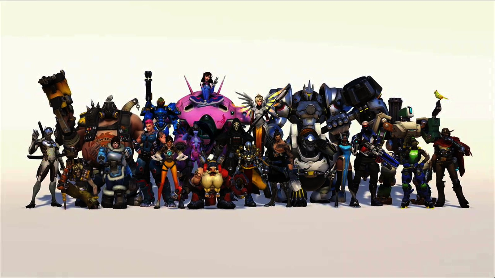
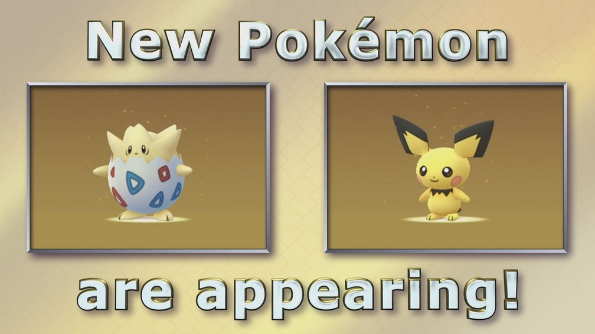

'Super Mario Run' é lançado para iPhones’
Postado em 02 de Abril 2016
Super Mario Run", primeiro game para celulares do encanador bigodudo Mario, foi lançado para iPhones nesta quinta-feira (15).
O jogo feito pela Nintendo e sob supervisão de Shigeru Miyamoto, criador do personagem, pode ser baixado de graça,
mas sua versão completa custa US$ 10 (cerca de R$ 34).
Ele roda em dispositivos que tenham ao menos a versão iOS 8 do sistema operacional da Apple.
De acordo com a Nintendo, o jogo também deve receber uma versão para aparelhos Android num futuro próximo.
Anunciado junto dos novos iPhones 7, em evento da Apple em setembro,
"Super Mario Run" é a "estreia de verdade" da Nintendo nos games para celulares. A empresa até lançou em 2016 "Miitomo",
app em que os jogadores usam os avatares Miis para interagir com amigos.
Mas é com o seu principal mascote que a companhia japonesa vai saber se é capaz de criar
um novo fenômeno em dispositivos móveis – e ganhar alguns milhões de dólares com isso, é claro.
O retrospecto é positivo. Basta observar o recente "Pokémon Go", desenvolvido pela produtora
Niantic em parceria com a The Pokémon Company, subsidiária da Nintendo.
Mas "Super Mario Run" é uma criatura diferente. Ele não quer ser disruptivo como "Pokémon Go",
que seduz por mesclar game, realidade aumentada e interações interpessoais.
O objetivo aqui é levar para os celulares a experiência e a sensação clássica de se jogar "Super Mario",
mas com TODOS os recursos que um celular pode oferecer. Ou seja, uma mão e olhe lá.
Essa característica, inclusive, é o carro-chefe do jogo. Shigeru Miyamoto foi a "talk-shows"
nos EUA para mostrar que "Super Mario Run" pode ser degustado com singelos toques de um único dedo na tela.
Movimentos usados para fazer Mario pular e avançar pelas fases, e teoricamente ideais para aquela viagem em pé espremido no metrô das 18h.
O caminho escolhido pela Nintendo para viabilizar essa facilidade é o do gênero de games conhecido como "infinity runners",
ou corredores infinitos, em tradução aberta. Em games desse tipo, os personagens correm automaticamente e infinitamente pela tela,
e o objetivo do jogador é ajudá-los a desviar de obstáculos, coletar itens, etc.
Felizmente, Mario está familiarizado com esse ambiente. Automaticamente ou não,
ele sempre teve de correr para a direita acumulando o máximo de moedas possível.
A Nintendo é conhecida pelo seu capricho e alto nível de padrão de qualidade com suas principais franquias.
A lógica diz que "Super Mario Run" irá provar que o pedigree da série está preservado.
O que a Nintendo quer saber, porém,
é como um título como esse (e como ela própria) vai se comportar em um habitat onde os jogos ficam velhos e chatos rapidamente.
E onde os jogadores pedem vorazmente por mais fases, mecânicas e outros conteúdos.
Saberemos da resposta em alguns meses (ou semanas).
'Overwatch' ganha evento de Natal e mais de 100 itens novos’
Postado em 12 de Dezembro 2016
O game de tiro "Overwatch" ganhou nesta terça-feira (13) seu terceiro evento temático,
desta vez inspirado no Natal, e com ele mais de 100 itens novos. Assista ao vídeo acima.
Chamado "Paraíso Congelado", o evento é temporário e vai até 3 de janeiro. Durante o período,
"Overwatch" terá um modo de jogo chamado "Ofensiva de bola de neve".
As partidas são disputadas entre dois times de 6 jogadores, todos controlando a personagem Mei.
O objetivo é acertar os adversários com bolas de neves encontradas pelo cenário.
Como já aconteceu nos Jogos de Verão e no Halloween Aterrorizante, as caixas de itens de "Overwatch",
presentes que os jogadores ganham sempre que sobem de nível ou quando vencem partidas no modo Arcade,
virão com ao menos um item cosmético temático do Natal. São novos sprays, emotes, poses de vitória,
animações de destaque, ícones do jogador e, é claro, skins.
Os destaques são os heróis Winston, que ganhou um abominável traje de yeti; Zenyatta,
em seu uniforme de Quebra-Nozes; e a dupla Torbjorn e Mei, que agora podem vestir roupas de Papai (e Mamãe) Noel.
Todos os itens desbloqueados durante o Paraíso Congelado ficarão disponíveis permanentemente no game.
As caixas de itens especiais, em formato de caixa de presente, também podem ser compradas com dinheiro de verdade.
O terceiro evento temático de "Overwatch" já está disponível nas versões do game para PC, Xbox One e PlayStation 4.
'Pokémon Go': Pichu e Togepi são primeiras criaturas da segunda geração’
Postado em 12 de Dezembro 2016
A Niantic anunciou nesta segunda-feira (12) que Togepi e Pichu são os primeiros monstros da segunda geração a chegar a "Pokémon Go".
Segundo a empresa, a dupla, dos jogos "Pokémon Gold" e "Pokémon Silver", poderão ser encontradas em ovos chocados no game.
As novas criaturas estarão disponíveis a partir desta segunda. Outros monstros da mesma geração serão lançados nos próximos meses.
Outra novidade que fará parte das celebrações de fim de ano no jogo é uma versão natalina do Pikachu,
que poderá ser capturada vestindo um gorro do papai noel. O pokémon festivo será encontrado até o dia 29 de dezembro.